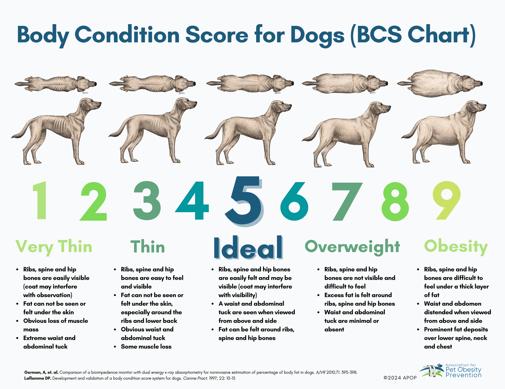
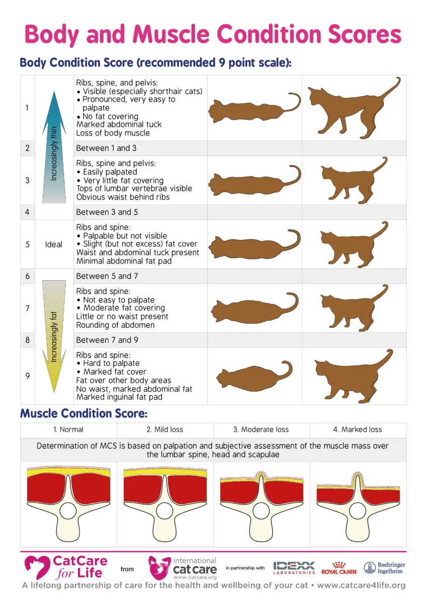

Body Condition Score
Assess your pet's body condition to determine if they're at a healthy weight
Body Condition Scale (1-9)


Score 5 is ideal. Use the assessment below to determine your pet's score.